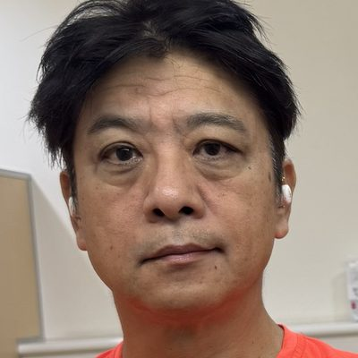
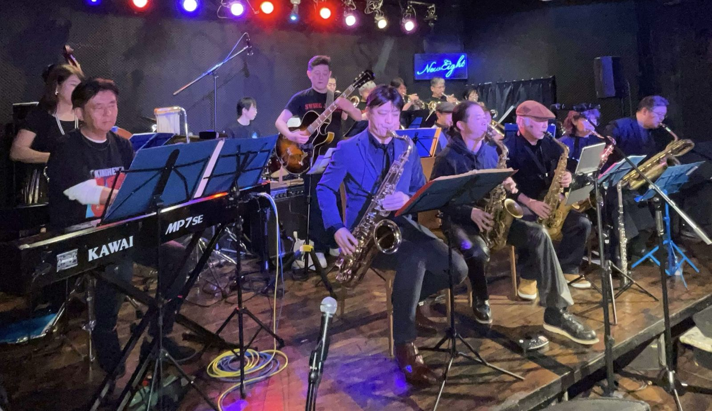
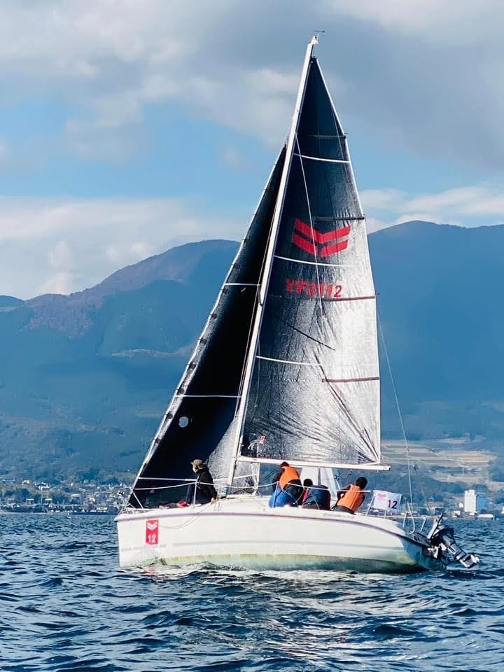
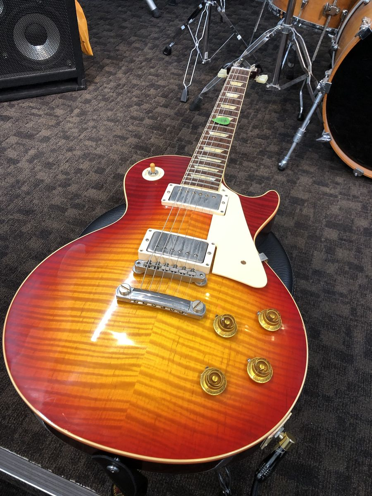
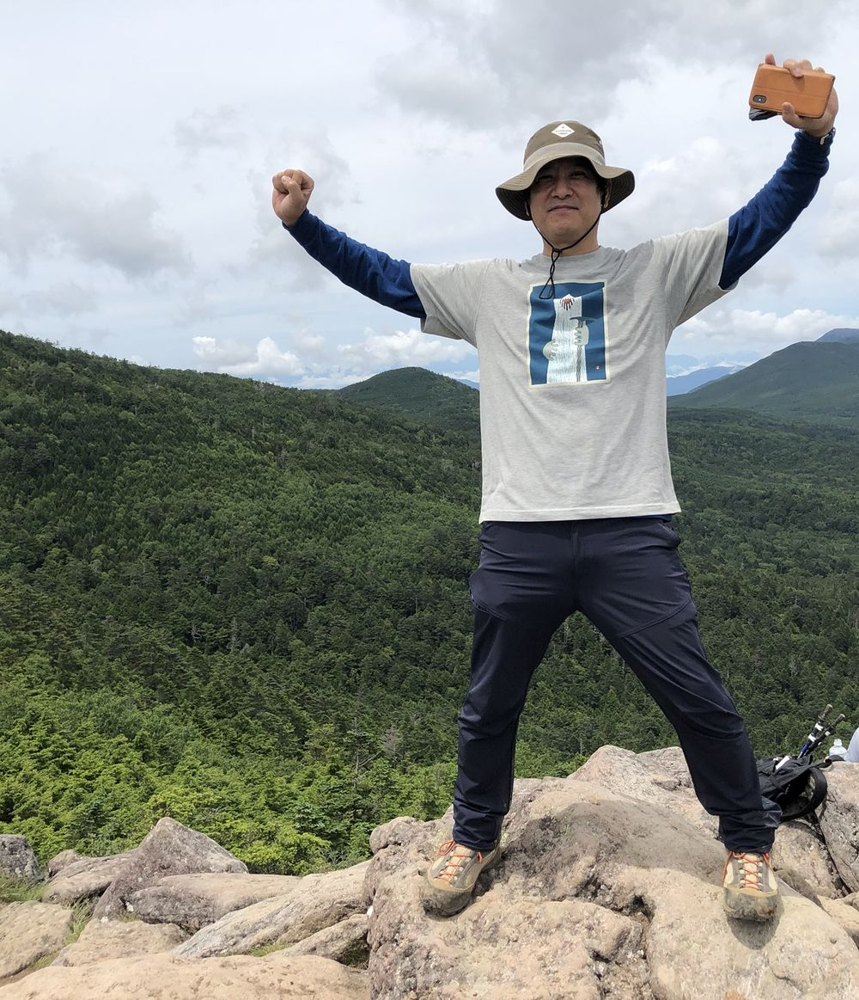
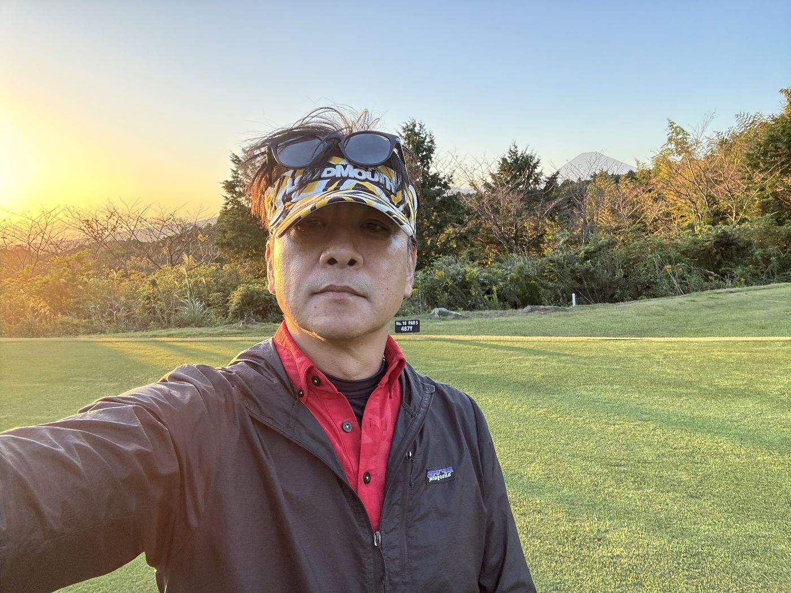
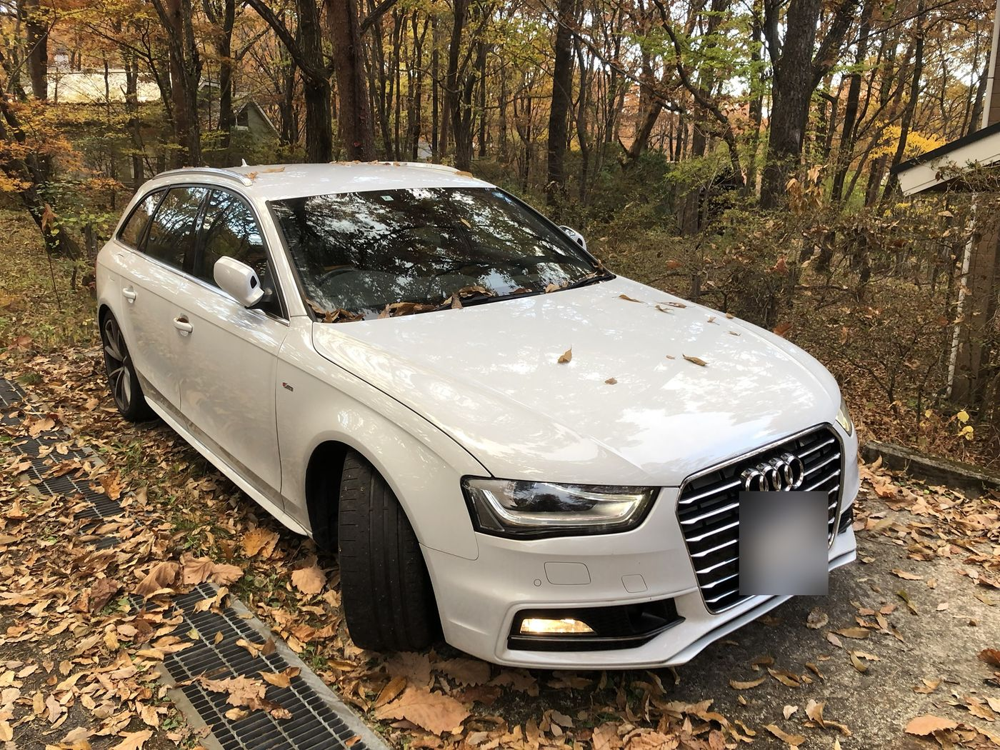
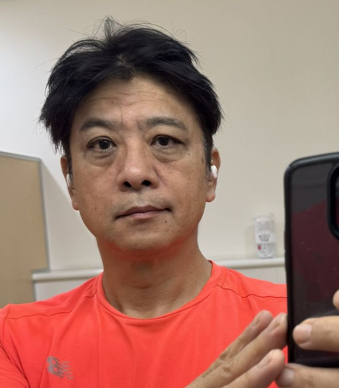

一九六五年、浜松で生まれた。遠州の空っ風に吹かれて育ち、大学から東京に出てきて、それ以来ずっと神奈川と東京のあいだを行ったり来たりしている。今は横浜に住んでいる。
自己紹介というのは、いつもうまくいかない。経歴を並べると、なんだか他人の話のように聞こえてしまう。だからここでは、僕が何を面白がってきたかについて、少しだけ書いてみようと思う。
- 好奇心新しいものを見ると、とりあえず手を伸ばしてしまう。
- 知性……と言うと大げさだけれど、考えることは好きだ。
- 愛嬌失敗談なら、たくさん持っている。
- 家族妻と息子。僕のいちばん大切なバンドメンバー。
四十年吹いても、
まだ探している。
十八歳でアルトサックスを手にしてから、気がつけば四十年が過ぎていた。そのあいだに僕はテナーに持ち替え、何本かの楽器と別れ、いくつかのマウスピースと出会った。社会人二年目に買ったセルマーは、今でも僕のいちばん古い友人のひとりだ。
日曜の夜になると、僕はビッグバンドのリハーサルスタジオにいる。十数人がそれぞれ違う楽器を持ち寄り、譜面の上でひとつの音楽になろうとする。うまくいく夜もあれば、そうでない夜もある。でも、うまくいかない夜のほうが、なぜだか帰り道のビールはおいしい。

先日も新しいマウスピースが届いた。高音は驚くほど素直に出る。でも低音は、三十年以上付き合ってきた古いオットーリンクのほうが、まだ少しだけ太い。
理想の音というのは、たぶん地平線みたいなものなのだと思う。近づいたぶんだけ、ちゃんと向こうへ逃げていく。そして僕は、それがそれほど嫌いではない。
五十歳、ヨットに乗る。
五十歳の春、僕は転職先の先輩に誘われて、生まれて初めてヨットに乗った。
船の上で飛び交う言葉は、ほとんど外国語のように聞こえた。タック、ジャイブ、シート。僕はそのたびに間違ったロープを握り、間違った場所に立っていた。やれやれ、と僕は思った。たぶん周りのみんなも同じことを思っていたはずだ。

でも、何度か海に出るうちに、ひとつだけ確かなことが分かった。ヨットは一人では走らない。舵を握る人間とロープを引く人間のあいだに、肩書きのようなものが入り込む余地はない。必要なのは、相手が次に何をするかを、言葉より先に信じることだ。
そういえば、それは会社でもまったく同じだった。上司も部下もなく信頼し合えたとき、チームはいちばん気持ちよく進む。僕はそれを、相模湾と琵琶湖の風から教わった。
好きなものについての、
ささやかな図鑑。

ギター
1960年型のレスポール。サックス吹きがギターを弾くのは、たまに違う言語で日記を書くのに似ている。

山歩き
山頂に着くと、なぜか両手を上げてしまう。誰に頼まれたわけでもないのに。

ゴルフ
スコアのことはあまり聞かないでほしい。でも十八番ホールで夕日と富士山が並んで見えたとき、僕はたぶん、その日いちばんいいショットを打っていた。

クルマとドライブ
落ち葉の積もった林道に車を停めて、エンジンを切る。音のない時間というのも、音楽の一部なのだと思う。

ジム
週に何度か、黙々とバーベルを持ち上げる。理由はうまく説明できない。たぶんサックスの低音のためだ。
香り
香水を少しずつ集めている。匂いは、写真よりも正確に記憶を連れてくる。
ヨット
舵を握っているときだけは、仕事のメールのことを忘れられる。たいていは。
家族と、長いドライブ。
僕の家族は三人だ。妻と、もう独り立ちした息子。息子は今、ずいぶん遠い町で暮らしている。
年に一度くらい、僕らは長いドライブに出る。地図を広げて、行ったことのない町に線を引き、そこへ向かって何百キロも走る。車の中ではたいした話はしない。それでも、同じ景色を同じ窓から眺めていると、家族というのはたぶんこういうものなのだろう、という気持ちになる。
カーナビの地図を何年も作ってきた人間が、休みの日にまだ地図を眺めている。妻は笑うけれど、それはそういうものなのだ。
仕事も、たぶん
好奇心の延長だった。
大学で通信工学を学び、パイオニアに入社した。最初はレーザーディスクのICを設計し、次にインターネットに出会い、それから地図に夢中になった。地図サービスの「MapFan」、カーナビがクルマ同士でつながる「スマートループ」。気がつくと、二十八年が過ぎていた。
五十歳でヤンマーに移った。農業や建設の世界に、IoTやスタートアップの考え方を持ち込む仕事だ。トルコやインドネシアの建設現場を歩き、シリコンバレーのベンチャーに投資し、今は企業や自治体と一緒に、再生可能エネルギーや新しい事業をつくっている。
ずいぶん遠くまで来たように見えるかもしれない。でも僕のやっていることは、たぶん最初からひとつだ。違うものどうしをつないで、まだ誰も聴いたことのない音を鳴らしてみること。
- 1987–2015パイオニア
技術研究所 → インクリメントP（MapFan）→ カーナビ向け通信サービス（スマートループ） - 2015–ヤンマーホールディングス
技術戦略 → 新規事業 → イノベーションセンター → CVC取締役 - 2022–技術本部 共創推進室 室長
オープンイノベーション、脱炭素・再エネ事業、ソーラーシェアリング
最近、気になっていること。
手作りの金メッキのマウスピースが届いた。明るくて、少し気難しい音がする。どうやらリードを、もう少し柔らかいものに替えたほうがいいらしい。今週の日曜のリハーサルで、試してみようと思う。